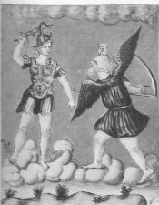
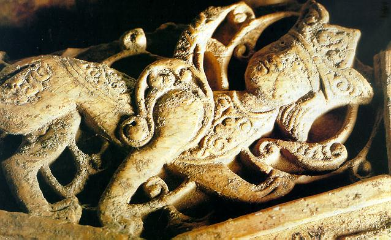

Emblema I.
revu le 1er octobre 2002
Portavit eum ventus in ventre suo.
(Le vent l’a porté dans son ventre1)
L’embryon enfermé dans le sein de Borée
S’il apparaît un jour, vivant, à la lumière
Peut, lui seul, surpasser les labeurs des héros
Par son bras, son esprit, son corps ferme, son art.
Qu’il ne soit pas pour toi avorton inutile,
Agrippa ou Céson, mais né sous un bon astre.2
FUGA I
Hermès, investigateur très diligent de tout secret naturel, donne dans sa Table d’Emeraude3 une description écrite, bien que succincte, de l’œuvre naturelle, où il dit entre autres choses :
" Le vent l’a porté dans son ventre ",
comme s’il disait
" Celui dont le père est le Soleil, et la Lune la mère, avant d’être produit à la lumière, sera porté par des fumées de vent, comme l’oiseau par l’air pendant qu’il vole ".4
La coagulation des fumées ou vents (qui ne sont rien d’autre que l’air mis en mouvement) produit l’eau qui, mélangée avec la terre, donne naissance à tous les minéraux et les métaux. Bien plus, il est établi que ces derniers corps se composent eux-mêmes de fumées et se coagulent immédiatement. Donc qu’il soit placé dans l’eau ou dans la fumée, cela revient au même puisque l’une et l’autre sont la matière du vent.5 Il faut en dire autant, quoique d’une façon plus lointaine, des minéraux et des métaux. Mais, demandera-t-on, quel est celui qui doit être porté par le vent ? Je réponds : chimiquement c’est le soufre qui est porté dans l’argent-vif comme l’attestent Lulle au chapitre 32 du Codicille, et tous les autres6 ; au point de vue physique c’est le fœtus qui doit bientôt naître à la lumière ; je dis aussi qu’au point de vue arithmétique, c’est la racine du cube ; dans le domaine de la musique c’est la double octave ; au point de vue géométrique, c’est le point, principe de la ligne qui s’écoule ; à l’égard de l’astronomie c’est le centre des planètes Saturne, Jupiter et Mars.7 Bien que ces sujets soient divers, cependant, si on les compare entre eux avec soin, ils révéleront aisément le fœtus du vent, ce qui doit être laissé à la plus ou moins grande industrie de chacun.
Mais je désigne ainsi la chose d’une façon plus claire : tout Mercure est composé de fumées, c’est-à-dire d’eau qui soulève la terre avec elle dans la faible densité de l’air, et de terre qui force l’air à redevenir une terre faite d’eau ou une eau faite de terre.
En effet, les éléments sont partout, en lui, mélangés et comprimés, réduits l’un par l’autre en une certaine nature visqueuse ; par contre, ils ne se séparent pas aisément, mais tantôt ils suivent vers le haut les substances volatiles, tantôt ils demeurent en bas avec les fixes, ce qui apparaît d’abord dans le Mercure vulgaire et aussi dans le Mercure philosophique et les métaux fixes. Chez ceux-ci les éléments fixes dominent sur les volatils, dans celui-là les volatils l’emportent sur les fixes.8
Et ce n’est certes pas sans cause que Mercure est appelé et regardé comme le messager, l’interprète des autres dieux, et, en quelque sorte, leur serviteur courant dans l’espace intermédiaire, avec des ailes adaptées à la tête et aux pieds. Il est en effet plein de vent et vole à travers les airs comme le vent lui-même, ainsi qu’en général la preuve en est faite, au grand détriment de beaucoup. Il porte le Caducée, ceint obliquement de deux serpents, qui a le pouvoir d’introduire les âmes dans les corps, de les en faire sortir, et d’exercer de même de nombreux effets contraires ; ainsi il représente parfaitement le symbole du Mercure des Philosophes.9
Le Mercure est donc le vent qui reçoit le Soufre ou Dionysos, ou, si l’on préfère, Esculape, à l’état d’embryon imparfait, tiré du sein maternel, je dirai même des cendres du corps maternel consumé, et porté là où il peut mûrir.10 Et l’embryon est le Soufre qui a été infusé par le Soleil céleste dans le ventre de Borée pour que celui-ci le conduise à maturité et l’enfante. Car Borée, au terme de la gestation, mit au monde deux jumeaux, l’un à la chevelure blanche, nommé Calaïs, l’autre aux cheveux rouges appelé Zétès.11 Ces fils de Borée (comme l’écrit le poète Orphée) furent, avec Jason, au nombre des Argonautes partis pour ramener la Toison d’Or de Colchide. Le devin Phinée, dont les mets étaient souillés par les Harpyes, ne put être délivré que par ces enfants de Borée. En reconnaissance du bienfait ainsi obtenu, il annonça aux Argonautes le cours entier de leur voyage. Or les Harpyes ne sont rien d’autre que le soufre corrupteur qui est détruit par les fils de Borée quand ils sont parvenus à l’âge convenable.12 Il devient parfait, alors qu’il était imparfait, incommodé par les substances volatiles nuisibles. Il n’est plus alors sujet à ce mal et indique à ce moment au médecin Jason le chemin à suivre pour acquérir la Toison d’Or. Notre Basile s’est, lui aussi, parmi d’autres, souvenu de ces vents. Il écrit dans la sixième clé :
" Il doit venir un vent double nommé Vulturne et ensuite un vent simple appelé Notus qui souffleront impétueusement de l’Orient et du Midi. Quand leur mouvement aura cessé, de manière que l’air soit devenu eau, tu pourras être hardiment assuré que le spirituel deviendra corporel.
Et Riplée, en la huitième porte dit :
" Notre enfant doit naître dans l’air, c’est-à-dire, dans le ventre du vent. "
Dans le même sens l’Echelle des philosophes dit :
" Et il faut savoir que le fils des Sages naît dans Voir. "
Et au huitième degré :
" Les esprits aériens s’élevant ensemble dans l’air s'aiment mutuellement, ainsi qu’Hermès déclare : « Le vent l’a porté dans son ventre »
Car la génération de notre enfant a lieu dans l'air ; s’il naît dans l’air, il naît selon la sagesse : car il s’élève de la terre en l’air et de nouveau il descend en terre, acquérant la puissance d’en haut et celle d’en bas.13
Notes1. L'image montre le dieu Jupiter à la chevelure abondante et flamboyante. Dieu de l'Air, il assure la liaison entre les cieux et la Terre. La légende signifie que l'embryon de la Pierre, c'est-à-dire le Rebis [appelé encore homme double igné, fait de deux matières] doit être porté par un certain milieu qui est le véhicule du Soufre et le vecteur de sa réincrudation. Quant à Heinrich Cornelius AGRIPPA VON NETTESHEIM (1486-1535), voici quelques éléments biographiques pour le situer :
Né à Cologne. Surtout connu par sa correspondance (difficilement éditable, parce qu'elle n'est le plus souvent ni datée ni adressée). Il se présente comme jurisconsulte, médecin, astrologue, théologien. Il parcourt l'Europe au service de Maximilien et de Marguerite d'Autriche et Louise de Savoie (il séjourne à Lyon en 1527-1528). Il fréquente alors S. Champier, Augustinus Ricius (élève de l'astronome et kabbaliste Abraham Zæuto, qui a publié en Italie en 1513 le De Motu Octavæ Sphæræ) Oronce Finé. Il est considéré comme le père de l'occultisme. Il pratique l'art de Lulle avec les frères Canter, se réclame de Jean Trithème, étudie l'exégèse avec John Colet, correspond avec Érasme, intervient en faveur de Reuchlin et de Lefèvre d'Étaples dans le débat pré-réformiste. Comme après lui son élève Jean Wier il défend une sorcière et s'attire la colère des inquisiteurs (cf. Wier, De Præstigiis dæmonum, 1564).
2. Borée est le vent du nord. Il est assimilable à Aquilon et provient du septentrion, là où sont positionnées les étoiles de la Grande Ourse. Borée contracte des rapports avec Jason et la légende des Argonautes, par le biais de Calais, son fils. Notez qu'il existe une opération que les chymistes faisaient spécialement quand le temps était sec et lorsque le vent du nord soufflait ; ils évitaient ainsi le contact de l'air humide avec leur substance. Voyez ce que nous en disons dans la section sur Fontenay.

FIGURE I
(les dragons aquilloniens - extrait du Livre d'Abraham Juif)
3. La Table d'Emeraude est un texte qui semble dater du IIIe siècle après J.-C. Voyez le commentaire que nous en donnons à la Table d'Hermès.
4. Il faut entendre par là que la Pierre naît de deux principes. Le 1er, dit masculin, est le Soufre et le 2ème, dit féminin, est le Mercure. Mais il s'agit là de simplifications abusives car plusieurs composants sont contenus dans ces deux principes. Le soleil est le symbole du soufre « tingeant », mais c'est aussi, par son idéogramme l'association d'un point central, fixe et d'une circonférence dont on serait bien en peine de trouver le tenant et l'aboutissant. La lune est encore plus complexe : disons que son sens dépend de sa phase ; qu'elle symbolise deux matières et aussi des régimes de température.
5. Par fumée, vent et eau mêlées, il faut entendre des exhalaisons telles qu'on en voit dans les terrains volcaniques où la manifestation du dieu Ploutos est la plus évidente. Ploutos et Coré sont les deux principes des germinations minérales [cf. mercure de nature]. On peut montrer que quantités de minéraux cristallisés doivent leur apparition au contact de roches métamorphiques et de l'eau surchauffée sous pression, par la voie humide. Il semble bien que la Nature se soit servi surtout de la voie humide pour réaliser les cristaux qui exercent une action de fascination sur l'esprit humain. Sur la formation des minéraux et métaux au temps de Maier, cf. le Bergbüchlein.
6. C'est parfaitement exact : le soufre sublimé dans le Mercure est cette flèche en puissance, cette licorne, qui n'attend que des conditions favorables pour s'infuser par accrétion dans la résine de l'or ou toyson d'or.

FIGURE II
(la licorne et le cerf - De Lapide Philosophorum, Lambsprinck)7. La racine du cube, c'est, par cabale, l'origine d'une substance unique qui est le produit de trois autres substances : le soufre, le mercure et le sel. Le centre des trois planètes Mars, Jupiter et Saturne renvoie aux principes nommés par ces hiéroglyphes célestes : pour Mars, Arès ou un vitriol ; pour Saturne, le dissolvant et pour Jupiter, l'Air des Sages que Philalèthe a révélé. Notez que les Muses évoquées par Maier - l'arithmétique, la géométrie, la musique et l'astronomie font partie du Miroir de la Science, tel que défini par Vincent de Beauvais dans son Speculum Majus, cf. section Gobineau de Montluisant.
8. Ces notions de fixe et de volatil ont produit de nombreux contre sens et ont été responsables d'une confusion entre la voie sèche et la voie humide. Il est, en effet, naturel de s'imaginer qu'une substance se volatilise dans un milieu aérien pour se condenser, par exemple, dans le col d'une cornue. Or, les alchimistes pratiquent des volatilisations philosophiques qui s'appellent des sublimations. Ces opérations se font dans un milieu visqueux, d'une plus ou moins grande fluidité, qu'ils ont appelé [notamment Philalèthe] l'air des Sages ; ce milieu est un fondant.
9. Nous avons déjà insisté sur l'emblème du caducée. Ce symbole complexe représente l'image même des Gémeaux. Les serpents entrelacés correspondent aux soufres sublimés qui animent le Mercure et qu'il faut fixer en substance tingeante, ce qu'exprime la tige du caducée.
FIGURE III
(Hermès et son caducée - extrait du Livre d'Abraham Juif)Remarquez encore que Maier cite le Mercure comme l'intermédiaire entre les planètes - il contient le vent - ce qui laisserait supposer un milieu aérien. Mais rien n'est plus faux et de nombreux alchimistes ont abusé les impétrants en leur faisant croire qu'ils travaillaient avec la voie humide alors qu'ils n'avaient en vue que la vois sèche.
10. Le corps maternel est la minière du métal d'où l'on tire ses cendres, c'est-à-dire sa chaux. Les alchimistes utilisent aussi une autre variété de cendres, dans la préparation du feu secret [dissolvant, Mercure commun]. Ce dissolvant est appelé Mercure vulgaire, en son premier état, par Ramon Lull, dans la Clavicule. L'opération que vise Maier se déroule - par cabale - dans les signes de la Balance et de la Vierge. Le Rebis est alors nourri par le Lait de Vierge, allégorie mise au point par Artephius.
11. On prête à Borée des traits qui l'identifient à notre Saturne : froid, rigoureux, c'est un vieillard barbu, ailé. C'est un vent qui souffle de la Thrace. Il y a là un jeu de mot : Thrace, en grec, se dit qtrakh, proche de qtrakiaV, pierre de Thrace qu'on disait s'enflammer dans l'eau. Il y a là une indication presque directe sur la matière du Mercure. La mythologie nous apprend que Borée est fils d'Eos et d'Astraeos. Or, Eos est la personnification divine de l'Aurore. Elle est en tout point assimilable à la Vénus-Aphrodite qui est à l'origine du sel des cendres et qu'on a lié à Hespéros dans la section sur l'Olympe hermétique. Quant à Astraeos, c'est notre étoile des Mages, celle qui se lève en même temps qu'Hespéros et qui occupe une place éminente dans la constellation de Canis major. Les jumeaux Calaïs et Zétès donnent des indications sur l'évolution des couleurs. Calaïs a une chevelure blanche : il ne sépare jamais de son frère. C'est un enfant ailé, ce qui signale son caractère mercuriel. En raison de leur ascendance, d'ailleurs, Calaïs et Zétès furent surnommés les Boréades. Ils participèrent au voyage des Argonautes, dont Pernety est persuadé qu'il s'agit d'une allégorie du grand Oeuvre. On a donné déjà quelques remarques là-dessus dans la section du dragon écailleux. Zétès et Calaïs figurent en bonne place au nombre des héros qui firent partie de l'expédition de la Toison d'or. Leur rôle fut d'importance si l'on considère qu'ils firent fuire les Harpyes qui harcelaient le devin Phinée ; en cela, elles se rapprochent du vautour qui dévorait sans cesse le foie de Prométhée et leur symbolisme doit être rapproché.
12. Maier nous présente ici une version allégorique originale du grand Oeuvre. Voyons d'abord qui est Phinée. On ne sait trop au juste pourquoi ce roi fut aveuglé ; la légende court comme quoi il aurait préféré une longue vie à la vue [rappelons qu'Achille avait préféré la gloire à une longue vie]. Quoi qu'il en soit, ce roi était tourmenté par les Harpyes qui lui dérobaient ses plats ou qui les souillaient. Les Harpyes furent d'abord considérées par Hésiode comme des femmes aîlées à la belle chevelure. Mais cette légende fit long feu et les mythographes leur donnèrent bientôt l'apparence de monstres épouvantables. Elles tenaient du vautour par leur corps, de l'aigle par leur bec et leur griffes, et répandaient une odeur épouvantable. Elles passaient aussi pour des monstres impossibles à rassasier. Le symbolisme du vautour [cf. Atalanta, XLIII] nous rapproche indiscutablement du soufre ; voyez ce que nous en disons à la section Fontenay. Et c'est vrai que c'est dans la nuit, les ténèbres, la mort, que la déesse vautour revivifie l'Âme, symbole du Soufre. Ces Harpyes furent chassées par les fils de Borée, ce qui signifie - selon la doctrine de Maier - que le Soufre perdit peu à peu sa corruption, sous l'influence de Zétès et Calaïs. Pour Pernety :"Monstres enfans de Neptune et de la Terre. Elles avaient la tête d’une femme, avec un visage pâle et blême, le corps d’un vautour, des ailes de fer, des griffes aux pieds et aux mains, et un ventre énorme par sa grandeur. On les nommait Ocypeté, Aello, Celaeno. Elles enlevaient les mets de dessus la table de Phinée, et infectaient ceux qu’elles y laissaient. Zethès et Calais, fils de Borée, l’en délivrèrent et les chassèrent jusqu’aux isles Plotes. Voyez les Fables Egypt. et Grecq. dévoilées, liv. 2, ch. 1." [Dictionnaire]

FIGURE IV
(harpye - site consulté)il s'agit de monstre enfantés de l'Eau et de la Terre. Quant à Phinée :
"Fils de Phénix, Roi de Salmidesse, fut puni d'aveuglement par les Dieux, pour avoir fait crever les yeux à ses enfants. Ils le firent aussi tourmenter par les Harpies, qui enlevaient ou gâtaient les viandes qu'on lui servait. Calaïs et Zethus le délivrèrent de ces monstres, lorsqu'ils passèrent chez lui en allant à la conquête de la Toison d'or. Phinée, par reconnaissance, enseigna aux Argonautes la route qu'ils devaient tenir, pour arriver heureusement dans la Colchide, et pour s'en retourner dans leur patrie. Voyez tout cela expliqué chimiquement dans les Fables Egyptiennes et Grecques dévoilées, liv. 2, ch. 1." [Dictionnaire]
On peut comprendre que Phinée symbolise, pour l'Artiste, le bon chemin pour parvenir à l'oeuvre au rouge, en passant par l'oeuvre au blanc, grâce à l'heureuse influence de Calaïs d'abord puis de Zéthès. C'est une autre version, en somme, de l'ermite qui participe à la légende de saint Christophe ; et le même que l'on voit sur la lame IX du Tarot [cf. Tarot alchimique]. Les jumeaux constituent, en quelque sorte, les Gémeaux mythologiques de l'oeuvre et aident à purifier le Soufre, c'est-à-dire à le sublimer avant qu'il soit réincrudé en forme cristalline [la forme amorphe du Soufre étant à l'égale de sa corruption]. Ce chemin, c'est celui qu'indique le Sagittaire, par la flèche qu'il pointe vers l'étoile [cf. Fontenay]. On peut donc compléter ainsi le sens de l'allégorie : Phinée représente le mode d'emploi, le code en quelque sorte, par lequel on peut arriver à sublimer les Soufres, c'est-à-dire les chaux métalliques. Les Harpyes représentent les Soufres dissous dans le Mercure précocément, au stade de la putréfaction ; Calaïs et Zéthès sont les deux serpents enroulés autour du caducée d'Hermès. Pernety commente ainsi le voyage des Argonautes :
"Ce n’est pas aussi sans raison que Phinée fut délivré des Harpies par Calais et Zetès, tous deux fils d’Eole; puisque Basile Valentin dit dans sa sixième Clef, que deux vents doivent souffler, l’un le vent d’orient, qu’il appelle Vulturnus, et l’autre le vent du midi, ou Notus. Après que ces deux vents auront cessé, les Harpies seront mises en fuite, c’est-à-dire, les parties volatiles deviendront fixes." [article Jason, Dictionnaire]
Nous tenons ainsi l'explication de ces anges qui soufflent des vents tumultueux sur de nombreuse gravures. Mais Pernety se trompe en donnant les Boréades comme fils d'Eole, puisque leur père est Borée. Notus ou Notos est un vent chaud et humide, fils d'Eos, qui souffle du Sud-est. Quant à Vulturnus, il s'agit d'Euros, vent du sud-ouest. Vous verrez dans le lexique que ces deux vents permettent de caractériser le Mercure comme étant une Eau ou Feu, entourée d'Air. En revanche, Pernety a bien vu que la fuite des Harpyes signifiait la réincrudation des Soufres. Dans son Dictionnaire, à l'article Caeleno, il nous dit encore ceci :
"Celeno. La Fable en admet deux, l’une fille d’Atlas, laquelle eut commerce avec Jupiter; l’autre était une des Harpies, fille de Jupiter et de la Terre. Les Poëtes, et ceux qui ont dit après eux que les sept filles d'Arlas ont formé les sept Pleïades, et que chacune d’elles a un rapport avec une des planetes, donnent Celeno à Saturne. On dirait qu’ils ont consulté les Adeptes pour donner cette explication; elle ne pouvait en effet y mieux convenir, puisque Celeno vient d’un mot grec qui signifie obscurité, noirceur, et le Saturne des Philosophes n’est autre que la matiere de l’œuvre parvenue au noir pendant qu’elle est en putréfaction. On peut voir dans l’article Harpie ce qu’elle signifie de plus. Voyez aussi les Fabl. Egypt. et Grecq. dévoilées, liv. 2, chap. 1." [Dictionnaire]
Caeleno, parmi les Harpyes, indique précisément leur origine. Notez qu'il ne faut pas confondre la Harpye Caelano avec l'une des Pléiades, Celaeno, qui enfanta lycos qui joua un certain rôle, lui aussi, dans l'expédition des Argonautes. En résumé, le vent, par l'association de l'Eau et du Feu, peut seul chasser ces tourmenteuses d'âmes, qui leur sont liées à l'origine. Au vrai, seul le souffle de l'Esprit, comme il se doit, peut les dissiper. Pour en terminer avec les Harpyes, elles furent donc chassées par les fils de Borée, jusqu'en Acarnanie; là, Iris leur apporta un message de Zeus: les Harpyes devaient être épargnées, car elles étaient ses servantes, mais, jamais plus, elles ne tourmenteraient Phinée. Iris donne ici une indication de cabale hermétique : il s'agit des irisations évoquant la queue de paon qui se situent entre le régime de Saturne et celui de la Lune, de couleur grise selon Pernety, qui caractérisent le régime de Jupiter. N'oublions pas que le paon est l'animal consacré à Junon [Héra] ; et que Junon envoie le démon Typhon poursuivre Latone en l'empêchant d'accoster. C'est du même thème que relève cette allégorie : Iris est équivalente à Délos. Voici encore un extrait d'Apollodore :
ils [les Argonautes] arrivèrent à Salmydessos, en Thrace, où habitait Phinée, le devin aveugle. Certains disent qu'il était le fils d'Agénor, d'autres de Poséidon ; et l'on raconte qu'il fut frappé de cécité par les dieux, parce qu'il prédisait leur avenir aux mortels ; ou bien que ce furent Borée et les Argonautes eux-mêmes à le faire, parce que Phinée avait d'abord rendu aveugles ses fils, sur l'instigation de leur belle-mère ; mais il existe encore une autre version, suivant laquelle Poséidon le priva de la vue, parce qu'il avait révélé aux fils de Phrixos la route qui menait de Colchide en Grèce. Les dieux lui avaient aussi envoyé, pour accroître son tourment, les Harpyes : créatures ailées, chaque fois que Phinée se mettait à table, elles tombaient du ciel pour lui voler toutes les choses, et le peu qu'elles laissaient s'imprégnait d'une telle puanteur qu'on ne pouvait même pas s'en approcher. Les Argonautes voulaient apprendre de Phinée la bonne route pour leur voyage, et le devin promit de tout leur révéler, à condition qu'ils le libèrent des Harpyes. Alors les Argonautes préparèrent une table garnie : aussitôt les Harpyes s'y précipitèrent en poussant d'horribles cris, et elles emportèrent toute la nourriture. Quand ils les virent, Zétès et Calaïs, les fils de Borée, qui étaient ailés, brandirent leur épée et se mirent à leur poursuite à travers le ciel. Ainsi le voulait le destin, que les Harpyes meurent de la main des Boréades. Mais également pour ces deux jeunes gens, ce jour devait être leur dernier, parce qu'ils mourraient sans avoir réussi à les capturer. Dans leur fuite, une des Harpyes (de son nom Nicothoé ou Aellopoda) tomba dans le Tigris, qui maintenant, de son nom, est appelé Harpys ; l'autre, (que l'on appelle Ocypété, ou bien Ocythoé, mais Hésiode la nomme Ocypode) s'enfuit au-delà de la Propontide et rejoignit les îles Échinades, celles qu'à présent nous appelons Strophades, justement parce que la Harpye, quand elle y arriva, changea de direction (estràphe) et vola vers la terre ferme, où elle tomba d'épuisement, en même temps que son poursuivant. Apollonios, dans ses Argonautiques, soutient pour sa part que les Boréades réussirent à les rejoindre, précisément aux îles Strophades, mais ils ne leur firent ensuite aucun mal, parce que les Harpyes jurèrent de ne plus tourmenter Phinée. [Livre I, 9, 21]
13. C'est ce type de passage qui a abusé tous les souffleurs et qui a fait prendre l'alchimie « opératique » pour une philosophie spéculative. Hermès ne dit point autre chose que ceci : à partir d'une Terre dont bien souvent nous avons énuméré les qualités et donné le nom vulgaire, se fait un Air, à la fois chaud et humide, qui se propage dans le ciel firmamental. Ce ciel chymique, c'est le Mercure philosophal. C'est lui qui contient les Soufres en puissance et ce sont ces Soufres dont il faut ôter les haillons sordides [harpyes]. Cette sublimation et cette purification accomplies, s'ouvre alors une ligne horizontale qui conduit à la réincrudation et qui est indiquée par le devin Phinée.
Lexiqueharpye : arpuia. Le premier sens indique la Ravisseuse, mère des vents. On peut y voir aussi des coursiers rapides. Cela indique un vent ou un air agité. Il faut en rapprocher arph : faucon, oiseau de proie, évoquant l'aigle et bien sûr, la sublimation. Et aussi tout objet crochu tel que faux ou faucille [cf. St Grégoire-en-Vièvre]. Cela fait penser au « mors » ou loup, petit grappin [arpax] ;
Okypete : Wkuphth. Littéralement, à l'élan rapide [Mercure] proche de wkuphthV : au vol rapide ; ou encore un trait saturnien avec wkuplanov : qui hâte sa course errante.
Aello : Aellw. L'Impétueuse, l'Ouragan. Proche de aella : mouvement impétueux qui traduit les perturbations survenant dans la phase de dissolution. aellehV : poussière qui tourbillonne [c'est l'état du soufre dans le vent de l'Air pendant la dissolution]. On rapprochera enfin Aello du chien d'Actéon qui dévora son maître avec 49 autres chiens et qui, selon certaines légendes, représente les cinquante jours hermétiques, pendant lesquels la matière disparait totalement.
Celaene : Kelainh. Proche de kelainoV, noir, sombre, mais aussi souillé de sang, en parlant du Styx, des Erynies. On en rapprochera kelainegkhV : à la lance noire de sang [épithète d'Arès].
Calaïs : kalaiV. Kalaïs, fils ailé de Borée. Homonyme de kalaiV, turquoise, pierre précieuse de couleur bleue ; proche de kalainoV : vases d'un bleu de turquoise qu'on fabricait à Alexandrie avec un mélange de soufre et de natron.
Zéthès : ZhthV. Argonaute. Proche de zhtew : chercher à connaître, dans un sens élevé. Rechercher dans un sens scientifique.
Phinée : JinuV.
Notos : NotoV. Le vent personnifié, proche de notioV qui désigne la mer, l'Eau. Vent du sud sud-ouest.
Euros : EuroV. Le « vent qui brûle », par eurroV, brûler. Vent de l'est, sud-est. A rapprocher par cabale de eurooV, coulant bien, c'est-à-dire visqueux, caractérisant l'état du Mercure.